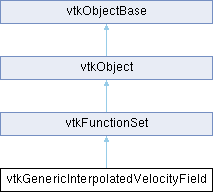

|
Etrek
|
|
Etrek
|
Interface for obtaining interpolated velocity values. More...
#include <vtkGenericInterpolatedVelocityField.h>

Public Member Functions | |
| vtkTypeMacro (vtkGenericInterpolatedVelocityField, vtkFunctionSet) | |
| void | PrintSelf (ostream &os, vtkIndent indent) override |
| int | FunctionValues (double *x, double *f) override |
| virtual void | AddDataSet (vtkGenericDataSet *dataset) |
| void | ClearLastCell () |
| vtkGenericAdaptorCell * | GetLastCell () |
| int | GetLastLocalCoordinates (double pcoords[3]) |
| virtual void | CopyParameters (vtkGenericInterpolatedVelocityField *from) |
| vtkGetMacro (Caching, vtkTypeBool) | |
| vtkSetMacro (Caching, vtkTypeBool) | |
| vtkBooleanMacro (Caching, vtkTypeBool) | |
| vtkGetMacro (CacheHit, int) | |
| vtkGetMacro (CacheMiss, int) | |
| vtkGetStringMacro (VectorsSelection) | |
| void | SelectVectors (const char *fieldName) |
| vtkGetObjectMacro (LastDataSet, vtkGenericDataSet) | |
| Public Member Functions inherited from vtkFunctionSet | |
| vtkTypeMacro (vtkFunctionSet, vtkObject) | |
| virtual int | FunctionValues (double *x, double *f, void *vtkNotUsed(userData)) |
| virtual int | GetNumberOfFunctions () |
| virtual int | GetNumberOfIndependentVariables () |
| Public Member Functions inherited from vtkObject | |
| vtkBaseTypeMacro (vtkObject, vtkObjectBase) | |
| virtual void | DebugOn () |
| virtual void | DebugOff () |
| bool | GetDebug () |
| void | SetDebug (bool debugFlag) |
| virtual void | Modified () |
| virtual vtkMTimeType | GetMTime () |
| void | PrintSelf (ostream &os, vtkIndent indent) override |
| void | RemoveObserver (unsigned long tag) |
| void | RemoveObservers (unsigned long event) |
| void | RemoveObservers (const char *event) |
| void | RemoveAllObservers () |
| vtkTypeBool | HasObserver (unsigned long event) |
| vtkTypeBool | HasObserver (const char *event) |
| vtkTypeBool | InvokeEvent (unsigned long event) |
| vtkTypeBool | InvokeEvent (const char *event) |
| std::string | GetObjectDescription () const override |
| unsigned long | AddObserver (unsigned long event, vtkCommand *, float priority=0.0f) |
| unsigned long | AddObserver (const char *event, vtkCommand *, float priority=0.0f) |
| vtkCommand * | GetCommand (unsigned long tag) |
| void | RemoveObserver (vtkCommand *) |
| void | RemoveObservers (unsigned long event, vtkCommand *) |
| void | RemoveObservers (const char *event, vtkCommand *) |
| vtkTypeBool | HasObserver (unsigned long event, vtkCommand *) |
| vtkTypeBool | HasObserver (const char *event, vtkCommand *) |
| template<class U, class T> | |
| unsigned long | AddObserver (unsigned long event, U observer, void(T::*callback)(), float priority=0.0f) |
| template<class U, class T> | |
| unsigned long | AddObserver (unsigned long event, U observer, void(T::*callback)(vtkObject *, unsigned long, void *), float priority=0.0f) |
| template<class U, class T> | |
| unsigned long | AddObserver (unsigned long event, U observer, bool(T::*callback)(vtkObject *, unsigned long, void *), float priority=0.0f) |
| vtkTypeBool | InvokeEvent (unsigned long event, void *callData) |
| vtkTypeBool | InvokeEvent (const char *event, void *callData) |
| virtual void | SetObjectName (const std::string &objectName) |
| virtual std::string | GetObjectName () const |
| Public Member Functions inherited from vtkObjectBase | |
| const char * | GetClassName () const |
| virtual vtkTypeBool | IsA (const char *name) |
| virtual vtkIdType | GetNumberOfGenerationsFromBase (const char *name) |
| virtual void | Delete () |
| virtual void | FastDelete () |
| void | InitializeObjectBase () |
| void | Print (ostream &os) |
| void | Register (vtkObjectBase *o) |
| virtual void | UnRegister (vtkObjectBase *o) |
| int | GetReferenceCount () |
| void | SetReferenceCount (int) |
| bool | GetIsInMemkind () const |
| virtual void | PrintHeader (ostream &os, vtkIndent indent) |
| virtual void | PrintTrailer (ostream &os, vtkIndent indent) |
| virtual bool | UsesGarbageCollector () const |
Static Public Member Functions | |
| static vtkGenericInterpolatedVelocityField * | New () |
| Static Public Member Functions inherited from vtkObject | |
| static vtkObject * | New () |
| static void | BreakOnError () |
| static void | SetGlobalWarningDisplay (vtkTypeBool val) |
| static void | GlobalWarningDisplayOn () |
| static void | GlobalWarningDisplayOff () |
| static vtkTypeBool | GetGlobalWarningDisplay () |
| Static Public Member Functions inherited from vtkObjectBase | |
| static vtkTypeBool | IsTypeOf (const char *name) |
| static vtkIdType | GetNumberOfGenerationsFromBaseType (const char *name) |
| static vtkObjectBase * | New () |
| static void | SetMemkindDirectory (const char *directoryname) |
| static bool | GetUsingMemkind () |
Protected Member Functions | |
| vtkSetStringMacro (VectorsSelection) | |
| int | FunctionValues (vtkGenericDataSet *dataset, double *x, double *f) |
| Protected Member Functions inherited from vtkObject | |
| void | RegisterInternal (vtkObjectBase *, vtkTypeBool check) override |
| void | UnRegisterInternal (vtkObjectBase *, vtkTypeBool check) override |
| void | InternalGrabFocus (vtkCommand *mouseEvents, vtkCommand *keypressEvents=nullptr) |
| void | InternalReleaseFocus () |
| Protected Member Functions inherited from vtkObjectBase | |
| virtual void | ReportReferences (vtkGarbageCollector *) |
| vtkObjectBase (const vtkObjectBase &) | |
| void | operator= (const vtkObjectBase &) |
Protected Attributes | |
| vtkGenericCellIterator * | GenCell |
| double | LastPCoords [3] |
| int | CacheHit |
| int | CacheMiss |
| vtkTypeBool | Caching |
| vtkGenericDataSet * | LastDataSet |
| char * | VectorsSelection |
| vtkGenericInterpolatedVelocityFieldDataSetsType * | DataSets |
| Protected Attributes inherited from vtkFunctionSet | |
| int | NumFuncs |
| int | NumIndepVars |
| Protected Attributes inherited from vtkObject | |
| bool | Debug |
| vtkTimeStamp | MTime |
| vtkSubjectHelper * | SubjectHelper |
| std::string | ObjectName |
| Protected Attributes inherited from vtkObjectBase | |
| std::atomic< int32_t > | ReferenceCount |
| vtkWeakPointerBase ** | WeakPointers |
Static Protected Attributes | |
| static const double | TOLERANCE_SCALE |
Additional Inherited Members | |
| Static Protected Member Functions inherited from vtkObjectBase | |
| static vtkMallocingFunction | GetCurrentMallocFunction () |
| static vtkReallocingFunction | GetCurrentReallocFunction () |
| static vtkFreeingFunction | GetCurrentFreeFunction () |
| static vtkFreeingFunction | GetAlternateFreeFunction () |
Interface for obtaining interpolated velocity values.
vtkGenericInterpolatedVelocityField acts as a continuous velocity field by performing cell interpolation on the underlying vtkDataSet. This is a concrete sub-class of vtkFunctionSet with NumberOfIndependentVariables = 4 (x,y,z,t) and NumberOfFunctions = 3 (u,v,w). Normally, every time an evaluation is performed, the cell which contains the point (x,y,z) has to be found by calling FindCell. This is a computationally expansive operation. In certain cases, the cell search can be avoided or shortened by providing a guess for the cell iterator. For example, in streamline integration, the next evaluation is usually in the same or a neighbour cell. For this reason, vtkGenericInterpolatedVelocityField stores the last cell iterator. If caching is turned on, it uses this iterator as the starting point.
|
virtual |
Add a dataset used for the implicit function evaluation. If more than one dataset is added, the evaluation point is searched in all until a match is found. THIS FUNCTION DOES NOT CHANGE THE REFERENCE COUNT OF dataset FOR THREAD SAFETY REASONS.
| void vtkGenericInterpolatedVelocityField::ClearLastCell | ( | ) |
Set the last cell id to -1 so that the next search does not start from the previous cell
|
virtual |
Copy the user set parameters from source. This copies the Caching parameters. Sub-classes can add more after chaining.
|
overridevirtual |
Evaluate the velocity field, f, at (x, y, z, t). For now, t is ignored.
Reimplemented from vtkFunctionSet.
| vtkGenericAdaptorCell * vtkGenericInterpolatedVelocityField::GetLastCell | ( | ) |
Return the cell cached from last evaluation.
| int vtkGenericInterpolatedVelocityField::GetLastLocalCoordinates | ( | double | pcoords[3] | ) |
Returns the interpolation weights cached from last evaluation if the cached cell is valid (returns 1). Otherwise, it does not change w and returns 0.
|
static |
Construct a vtkGenericInterpolatedVelocityField with no initial data set. Caching is on. LastCellId is set to -1.
|
overridevirtual |
Methods invoked by print to print information about the object including superclasses. Typically not called by the user (use Print() instead) but used in the hierarchical print process to combine the output of several classes.
Reimplemented from vtkFunctionSet.
| vtkGenericInterpolatedVelocityField::vtkGetMacro | ( | CacheHit | , |
| int | ) |
Caching statistics.
| vtkGenericInterpolatedVelocityField::vtkGetMacro | ( | Caching | , |
| vtkTypeBool | ) |
Turn caching on/off.
| vtkGenericInterpolatedVelocityField::vtkGetObjectMacro | ( | LastDataSet | , |
| vtkGenericDataSet | ) |
Returns the last dataset that was visited. Can be used as a first guess as to where the next point will be as well as to avoid searching through all datasets to get more information about the point.
| vtkGenericInterpolatedVelocityField::vtkGetStringMacro | ( | VectorsSelection | ) |
If you want to work with an arbitrary vector array, then set its name here. By default this in nullptr and the filter will use the active vector array.